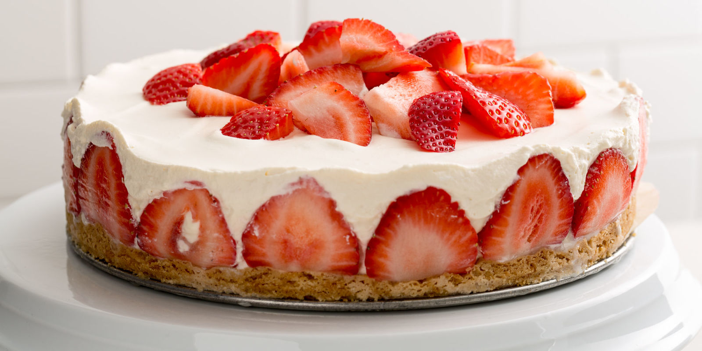

About Desert Recipes
It is one sweet that is made by households more commonly compared to the rest of the sweets. They are dark yellow in colour and shaped about the size of a golf ball. Ladoo are typically made from gram flour, semolina, ghee, sugar, milk, cardamom powder, chopped almonds and pistachios, and vark to decorate.
1.STRAWBERRY CHEESE CAKE

-
01.Preheat your oven to 350 °F (177 °C).
- 02.Mix together the graham cracker crumbs, ground pecans, and melted butter in a large mixing bowl. Make sure that the graham crackers are finely ground first; they should be the same texture as the ground pecans. Stir everything together with a rubber spatula until the mixture is damp and evenly combined.
- 03.Spread the crust mixture across the bottom of a 10-inch (25.4 centimeters) springform pan. Pack the crust down using your fingers. When you are done, place the pan into the fridge so that it can set while you prepare the filling.
- 04.Beat the cream cheese until it is light and fluffy. You can do this by hand in a mixing bowl, but a food processor or electric mixer will speed up the process.
- 05.Gradually add the eggs, vanilla, lemon juice, and sugar. Keep mixing until everything is blended together. There should be no streaks or swirls of egg yolk.
- 06.Take the springform pan out of the fridge, and add the filling into it. Use a large spoon to scoop the filling into the crust. Gently smooth the top down with a spoon or spatula when you are done.
- 07.Bake the cheesecake for 50 minutes, then let it cool for 15 minutes. Once the cake is set, take it out of the oven and place it on a cooling rack. Let it cool in the pan for 15 minutes; do not open the pan yet.
- 08.Mix together the sugar, sour cream, and vanilla. In a large mixing bowl, briskly whisk together the sugar, sour cream, and vanilla until everything is evenly combined. This will create a creamy topping for your cheese cake.
- 09.Pour the sour cream mixture over the top of the cheese cake. Use a rubber spatula to help spread it across the top of the cake evenly, if necessary.
- 10.Bake the cheesecake for another 5 minutes, then let it cool to room temperature before refrigerating it overnight. Once the cake has finished baking, take it out of the even and let it cool for 10 minutes. Run a knife around the inside edge of the pan to loosen the cake, but don't open the pan yet. Let the cake cool for about 1 hour, then chill it in the fridge for 24 hours.
- 11.Stir together the water and cornstarch in a saucepan, then add the jelly and cook over medium-high heat. Place a saucepan on the stove, and stir together the water and cornstarch. Add the jelly, and cook it over medium-high heat, stirring constantly, until the mixture has thickened.
- 12.Take the mixture off the heat, then stir in the liqueur or juice and let it cool to room temperature. You should notice the glaze thickening even more as it cools. If you'd like to add a hint of color to your glaze, you can add in a few drops of red food coloring as well.
- 13.Take the cheesecake out of the fridge, loosen the springform pan, and arrange the strawberries on top. Cut the stems off of the strawberries, and arrange them neatly on top of the cheesecake, with the pointed ends facing upward.
- 14.Pour the glaze over the top of the cheesecake, then serve immediately. Let some of it drip down the sides for the cake for an added touch. Refrigerate any leftovers.